| 第二次世界大戦 （マルチ史6） | |
| マルチ史 シリーズ第6回 | |
| 時期 | 1939年9月 – 1943年9月 |
|---|---|
| 場所 | ヨーロッパ、東部戦線、北アフリカ・中東、大西洋、太平洋 |
| 結果 | 連合国・コミンテルンの勝利。ドイツの降伏。イタリアは戦争中に連合国へ離反し、日本は降伏ののち連合国の側で再武装した |
| 交戦勢力 | |
| 連合国 ・イギリス ・アメリカ合衆国 コミンテルン ・ソビエト連邦 |
枢軸国 ・ドイツ ・スペイン ・ポルトガル |
| 陣営を転じた国 | |
|
・イタリア（枢軸国として参戦し、1943年に連合国へ離反） ・大日本帝国（枢軸国として参戦するも1942年に降伏し、のちに連合国の側で再武装） ・フランス（連合国として参戦するも1940年に降伏して枢軸国へ転じ、のちに解放されて連合国の側へ） | |
| 指揮官・参加者 | |
| 連合国 イギリス @人参 アメリカ @たぬき コミンテルン ソ連 @東方好き |
枢軸国 ドイツ @佃煮 イタリア @suisei 日本 @TAIGA |
第二次世界大戦（だいにじせかいたいせん、マルチ史6）は、1939年9月に勃発し、1943年9月に終結した世界規模の戦争である。ドイツを中心とする枢軸国と、イギリス・アメリカ合衆国・ソビエト連邦を中心とする連合国が交戦した。
緒戦において枢軸国は大きく優勢に進み、ドイツとイタリアはイギリス本土を陥落させ、東部ではモスクワを攻略するなど、ヨーロッパの広範を支配下に置いた。しかし1942年末の日本の脱落と、1943年のイタリアの連合国への離反を境に戦局は急転する。1943年なかばの連合国による全面的な反攻によってドイツの戦線は各地で崩壊し、同年9月、ドイツの降伏をもって戦争は終結した。終盤の戦いの主役となったのは、枢軸国から連合国へ転じたイタリアと、降伏ののち再武装した日本を従えたアメリカであった。ソビエト連邦は首都モスクワの喪失を含む苦しい防戦を強いられ、反攻に転じたのは戦争の最終盤であった。
第一次世界大戦の講和条約であるヴェルサイユ条約は、敗戦国ドイツに巨額の賠償と厳しい軍備制限を課した。1930年代、世界恐慌による混乱を背景にアドルフ・ヒトラー率いる国家社会主義ドイツ労働者党が台頭し、1933年に政権を掌握する。ドイツは再軍備を進め、ヴェルサイユ体制を相次いで打破していった。
1939年8月、ドイツはソビエト連邦と独ソ不可侵条約を締結して東方の安全を確保すると、9月1日にポーランドへ侵攻した。9月3日、イギリスとフランスがドイツへ宣戦を布告し、戦争が始まる。
ポーランドを早期に制圧したドイツは、矛先を西へ転じた。1940年、ドイツ軍はベネルクス三国を制圧してフランスへ侵攻し、パリ近郊にまで進出する。フランスは降伏し、以後はドイツに協力する立場に置かれた。西ヨーロッパ大陸の大半を制したドイツは、次に海峡の向こうのイギリスへと目を向ける。
ドイツは、来るべきソビエト連邦との戦争を見据え、突撃砲を主力とする機甲部隊の大量整備を軍備の中核に据えた。歩兵に随伴して直接火力を提供する突撃砲は、本格的な戦車に比べて速やかに数を揃えられる。ドイツはこれを骨格として、広大な東部戦線を押し進めるだけの打撃力を整えようとした。
ドイツは動員を着実に進め、計画していた60個師団規模の機甲部隊を揃えたうえで、対ソ戦に臨んだ。こうして整えられた機甲戦力は、独ソ戦の緒戦における破竹の進撃を可能にする。
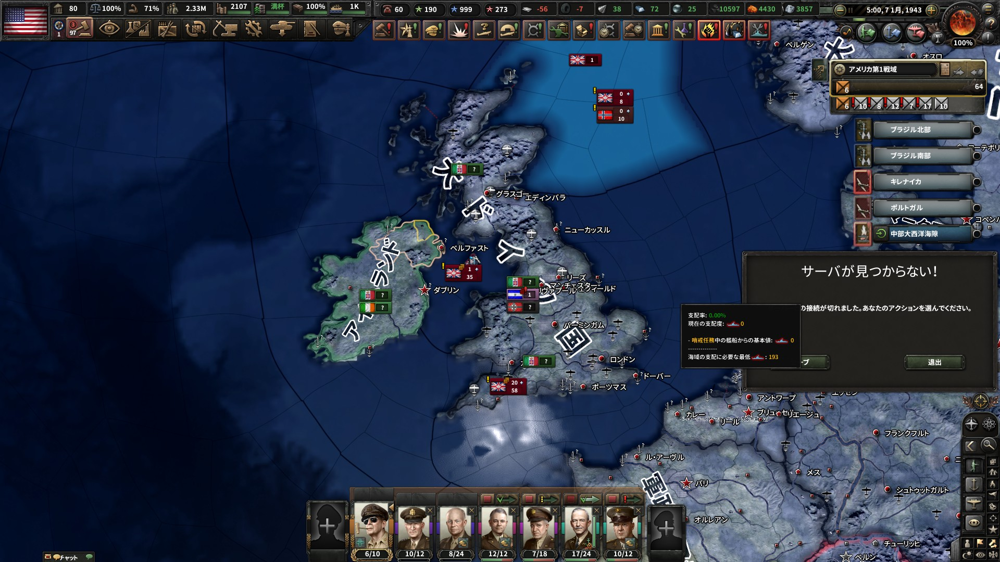
1940年末、ドイツとイタリアは降下猟兵とイタリア海兵隊を組み合わせた同時上陸作戦を敢行し、ドーバーを占領した。イギリス本土南東部に枢軸国の橋頭堡が築かれたことで、ヨーロッパの戦局は大きく揺らいだ。
この事態を受けて、それまで中立を保っていたアメリカ合衆国が同年末に参戦した。アメリカは当初計画していた90個師団から265個師団へと編成目標を緊急に拡大し、大規模な徴兵に着手した。動員を終えた陸軍をイギリスへ送り込んだものの、その到着は枢軸国の進撃に間に合わなかった。連合国軍は本土の大半を失い、スコットランド北部の一角に追い詰められた。そして1941年、そこへ到達したドイツ機甲部隊がイタリア軍と連携し、イギリス本土の全域を制圧した。
本土を失ったイギリス政府はカナダへ遷都して戦争を継続した。本国の陥落に伴ってインドは独立したが、独立後も連合国の一員として戦い続けた。インドを除く植民地はイギリスの指揮下にとどまり、北アフリカへ派遣されていたイギリス軍も無傷のまま残っていた。こうしてイギリスは、本土を喪失してなお戦争を継続する能力を保持した。
イギリス本土での戦いがなお続くなか、連合国はその陥落が避けられないと判断していた。本土を失えばヨーロッパ大陸への反攻は著しく困難になるため、連合国は本土が完全に落ちる前に代わりの足場を確保しようと動く。その標的となったのがアイルランドであった。アメリカとイギリスはアイルランドへ宣戦を布告し、イギリス領であった北アイルランドから地上侵攻を開始する。アメリカ軍を主体とするこの攻勢に対してイタリア軍が立ちはだかり、ドイツ機甲部隊が到達するまで戦線を持ちこたえた。やがて連合国軍は撃退され、アイルランドは枢軸国の勢力圏に取り込まれた。さらにイギリス領であった北アイルランドもイギリスから奪われ、アイルランドへ移管された。
この攻防と同じ時期、アメリカ軍は北方のスカパフローでも港湾をイタリアに奪われ、包囲下で全滅する打撃を被った。
1941年のイギリス本土の陥落は、それまで中立を保っていたイベリア半島の二国を動かした。同年、スペインとポルトガルが相次いで枢軸国へ加わり、枢軸国の勢力圏はイベリア半島とその植民地にまで広がった。
スペインはイタリアと共にジブラルタルへ攻勢をかけた。地中海と大西洋を結ぶこの要衝を扼すれば、連合国の海上交通に大きな打撃を与えられるはずであった。しかし、要塞化された山岳地形に拠るイギリス守備隊が頑強に抵抗したため、ジブラルタルは終戦まで枢軸国の手に落ちなかった。
一方、ポルトガルの参戦は、その植民地に火種を残した。ポルトガル領アフリカは南アフリカと境を接しており、ポルトガルが枢軸国の側に転じたことで、この植民地は南アフリカにとって脅威となった。一時は南アフリカが危機に陥ったものの、枢軸国がポルトガル領アフリカへ十分な戦力を送らなかったため、イギリスはこれを持ちこたえ、逆にポルトガル領アフリカを攻略した。
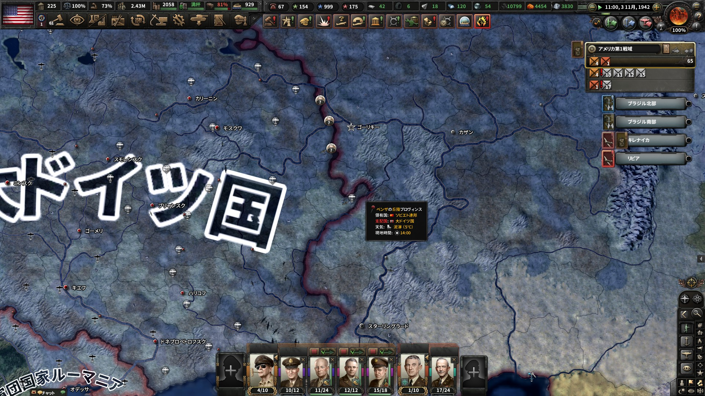
1941年、ドイツはソビエト連邦への侵攻を開始した。豊富な機甲戦力を擁するドイツ軍は緒戦から快進撃を続け、侵攻初年には首都モスクワの前面にまで到達する。翌1942年にはついにモスクワを攻略し、さらに東進してゴーリキーの前面にまで戦線を押し進めた。ソビエト連邦は首都モスクワを含む広大な領域を失い、ゴーリキーの線まで後退を余儀なくされる。
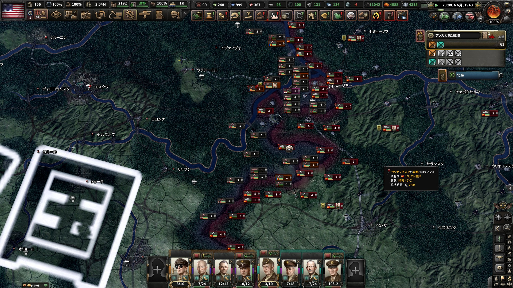
もっとも、ドイツの進撃もここで限界に達した。スターリングラードとレニングラードはいずれも陥落せず、コーカサスの油田地帯にも手が届かないまま、戦線は膠着した。ソビエト連邦は、レニングラード・モスクワ・スターリングラードを結ぶ線で踏みとどまり、ドイツ軍のさらなる前進を押しとどめる。広大な国土の奥行きが、首都を失った後もなお抗戦を続ける余地をソビエト連邦に与えていた。
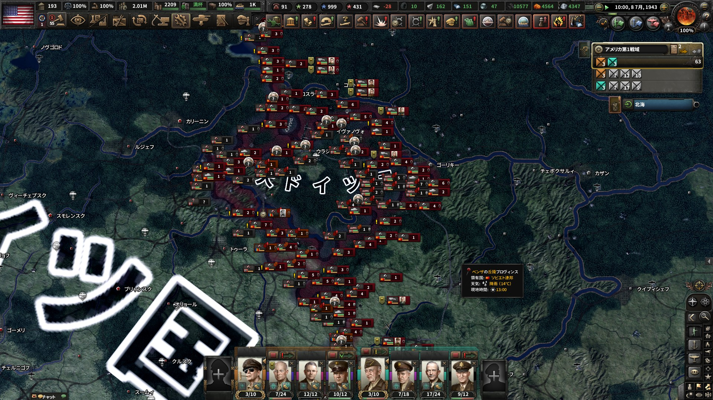
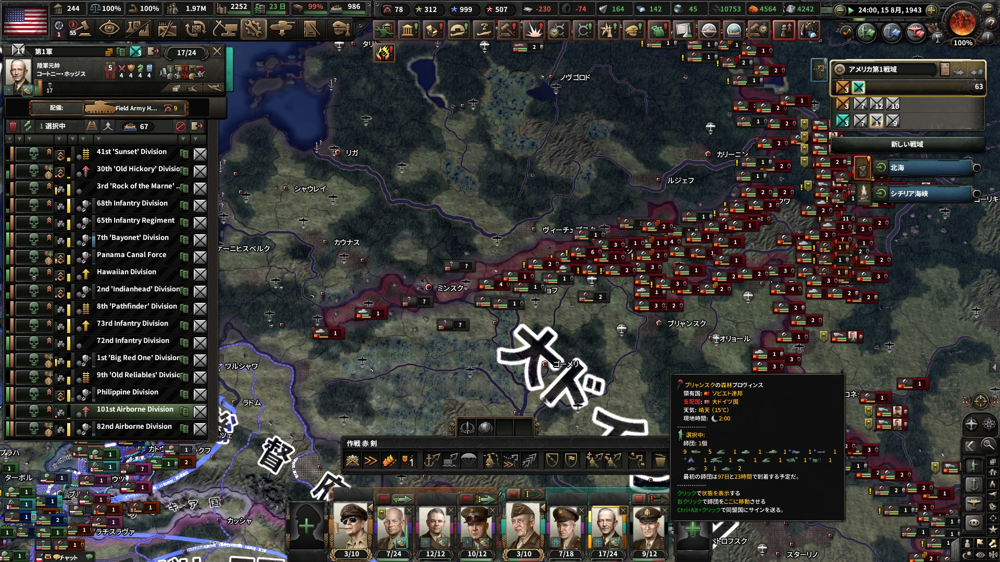
1943年、態勢を立て直したソビエト連邦は反攻に転じた。赤軍はゴーリキー前面に突出していたドイツの東部中央軍を包囲し、これを壊滅させると、攻略されていたモスクワを奪還する。西方で進行していた連合国の大反攻にドイツの戦力が割かれていたことも、東部戦線における赤軍の反攻を後押しした。戦争の終盤、態勢を立て直した赤軍はモスクワからワルシャワへ向けて急進した。これは占領地を固めながらの前進ではなく、ワルシャワの確保を急ぐ強行突破であり、ソビエト連邦が中欧へ勢力を伸ばそうとするこの動きは、連合国の警戒を招いた。
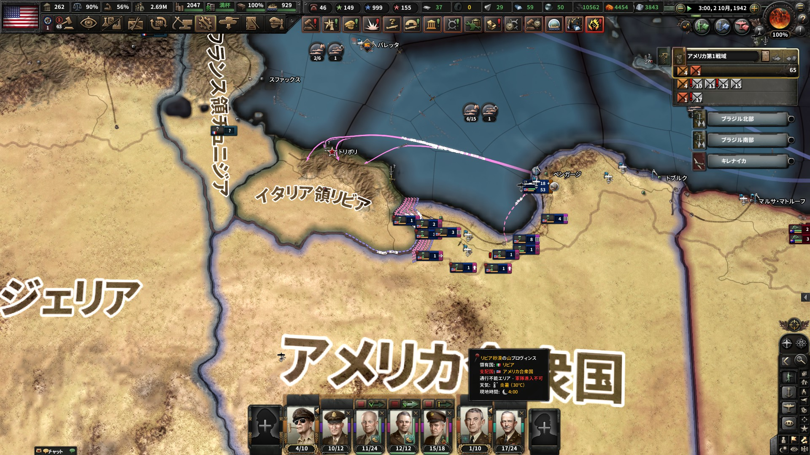
北アフリカでは、開戦後にイタリア軍が攻勢に出てエルアラメインの前面にまで進出した。これに対しイギリス軍はエルアラメインで踏みとどまり、枢軸軍がさらにエジプト深部へ進出するのを食い止めて、戦線を支え続けた。
戦局が転換したのは1942年後半である。10月以降、アメリカ軍がエルアラメインから反攻を開始し、リビアへ向けて西進した。トブルクやリビア中部での戦いで、イタリア軍は約20個師団を失う。一方、旧フランス植民地はほとんど戦闘を経ないまま連合国の占領するところとなり、スペイン領ではスペイン軍との戦闘を経てこれが制圧された。こうしてイタリアは、枢軸国に加わったスペインの領域もろとも、北アフリカ全域を失った。
北アフリカで連合国が攻勢に転じたことを受けて、ドイツはアントン作戦を発動し、それまで自治的な立場にあったフランスの全領土を占領下に置いた[1]。これによりフランス本土は完全にドイツの管理下に入り、その人的・物的資源は枢軸国の戦争遂行に組み込まれた。
東アジアでは、1937年以来の日中戦争が継続していた。日本は南京を攻略し、北部からは徐州まで進出して戦線の統一にいったんは成功する。しかし中国軍の反撃によって南京を失い、上海郊外まで後退した。徐州方面でも山東半島まで、北部でも石家荘まで押し戻され、戦線は三つに分断される。もっとも、日本軍は戦域を縮小して中国軍の攻勢を吸収し、以後の中国戦線は終戦まで膠着した。
1941年末、日本は連合国へ宣戦を布告したが、太平洋における上陸作戦や南方作戦は初動から失敗に終わった。アメリカが早くから連合国に加わっていたため、連合国は統一された防衛態勢を整えており、日本軍の侵攻はことごとく阻まれる。連合国は決戦となる海戦そのものを避けつつ、日本が防備を置いていなかった島々を順に押さえていった。まず硫黄島を、続いて沖縄を占領したが、これらはいずれもイギリス軍が担った。アメリカ軍はイギリス本土をめぐる戦いで多くの戦力を失っており、上陸戦力に余裕がなかったためである。日本は聯合艦隊とともに沖縄の奪回を試みたが、これもイギリスに阻止される。
1942年の末までに、アメリカ軍とイギリス軍は日本本土へ上陸した。アメリカ軍が北陸から、イギリス軍が横浜から進攻した。両軍は東京を守る日本軍を包囲して殲滅すると、そのまま西日本へ進撃して日本を降伏させる。降伏後の日本は、アメリカの主導のもとただちに再武装し、アメリカから供給される軍需物資を受けてヨーロッパ戦線へ派遣された。再起した日本軍は、のちのフランスの戦いでドイツ軍に打撃を与えることになる。アメリカはまた日本の造船能力の再建を支援し、その海軍力の回復を後押しした。
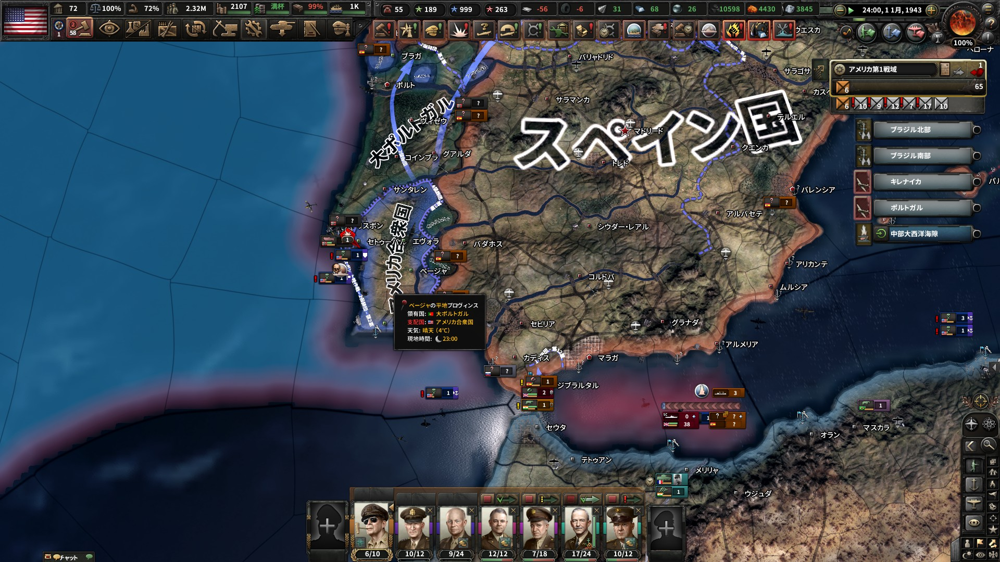
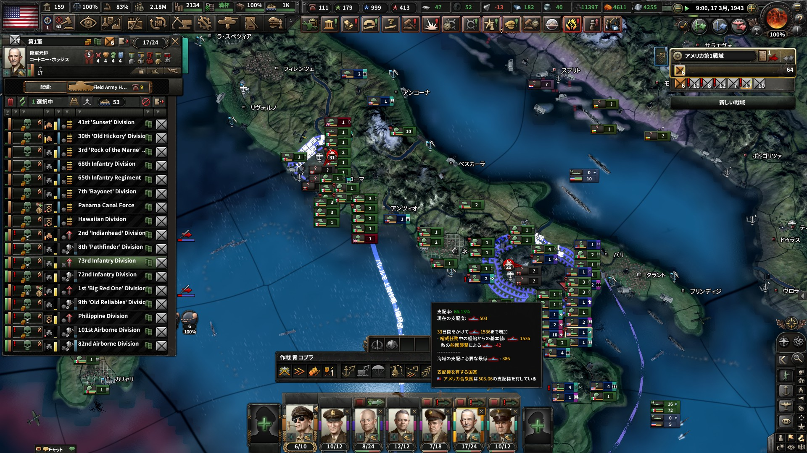
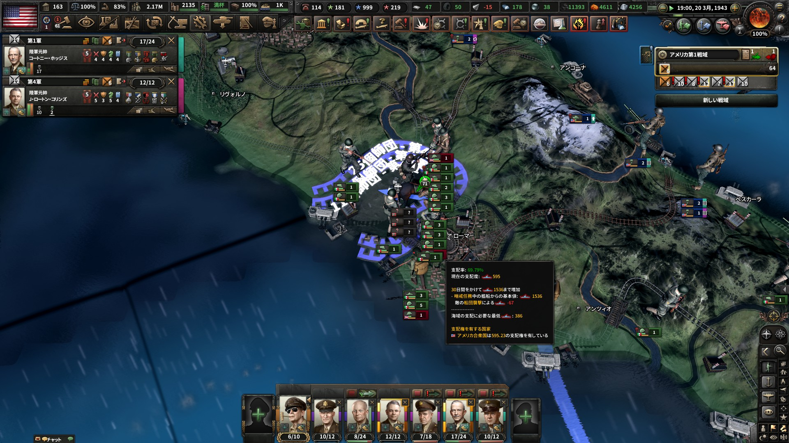
1943年初頭、連合国は地中海と大西洋で攻勢を強めた。1月、アメリカ軍はシチリア島へ上陸し、同時期にポルトガル本土へも上陸して、ドイツのタングステン供給に混乱を与えた。もっともポルトガルの拠点は、到着したドイツ軍の前に放棄され、アメリカ軍は撤退している。
北アフリカを失ったのちも、イタリアはポルトガル領を拠点にブラジルへの上陸を成功させるなど、なお遠征の余力を残していた。しかしその直後、ムッソリーニが拘禁され、イタリアは1943年3月に連合国へ離反する。ドイツ軍が駐留していた南部を除くイタリアのほぼ全土が連合国の側へ転じ、イタリア軍はただちにアメリカ軍と協同してドイツ軍へ攻撃を加え、その多数の師団を殲滅した。イタリア国内に取り残されたドイツ軍は、最後にローマへ立てこもったが、イタリア軍によって殲滅された。長く枢軸国の一翼を担っていたイタリアの離反は、ヨーロッパにおける枢軸国の崩壊を決定づける転機となる。
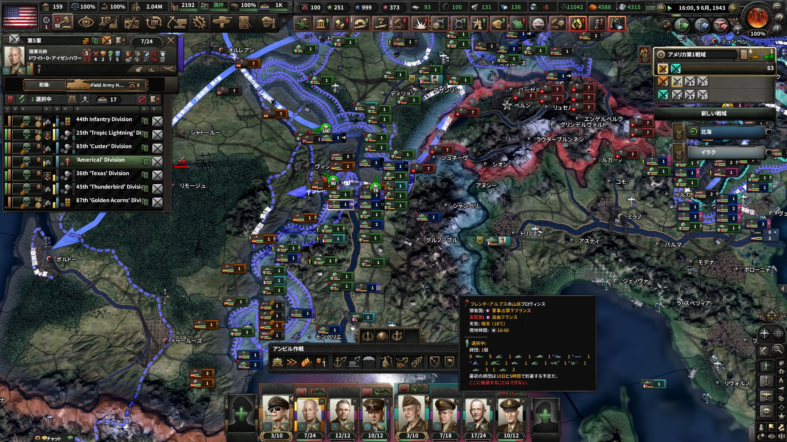
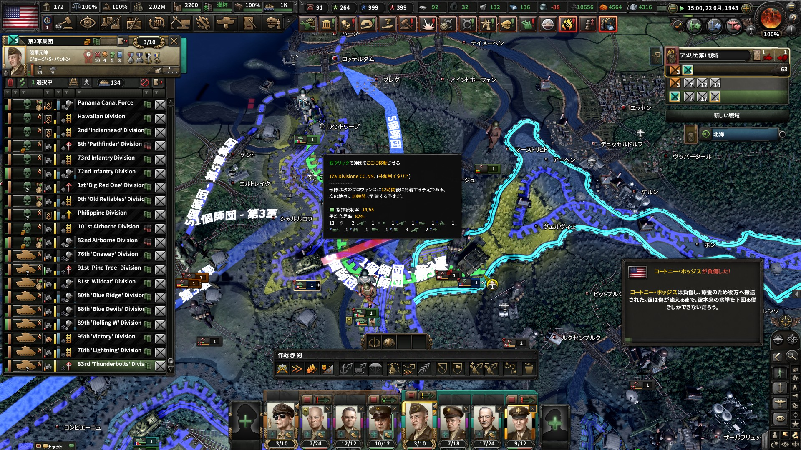
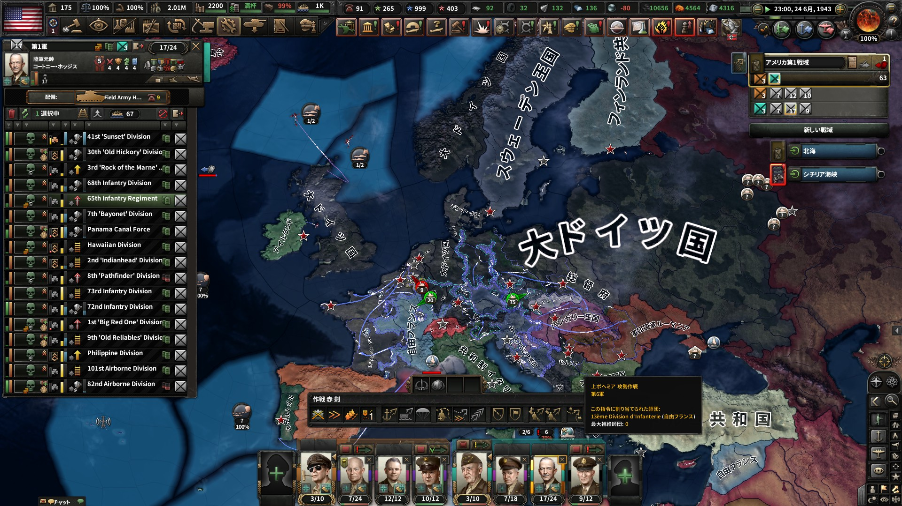
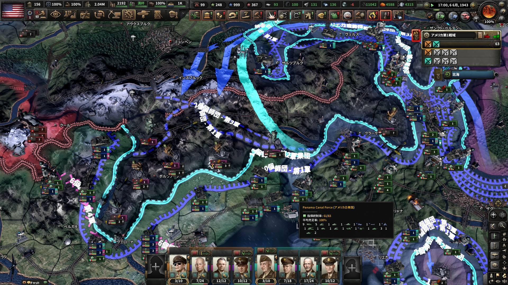
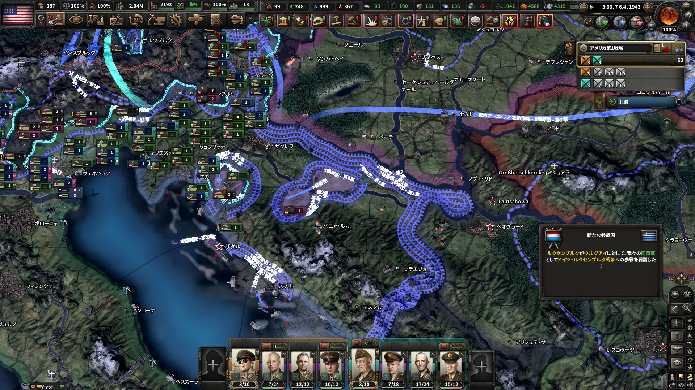
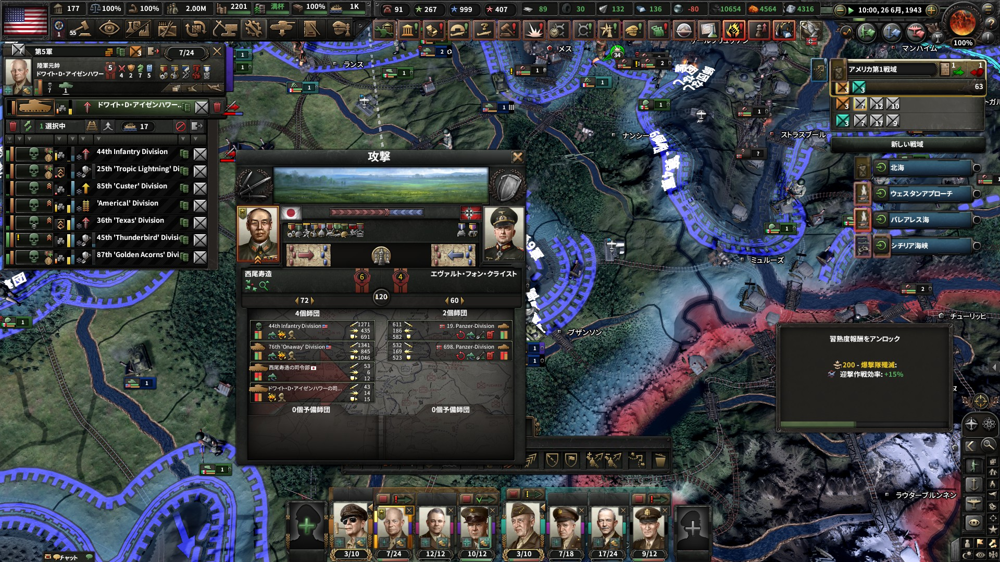
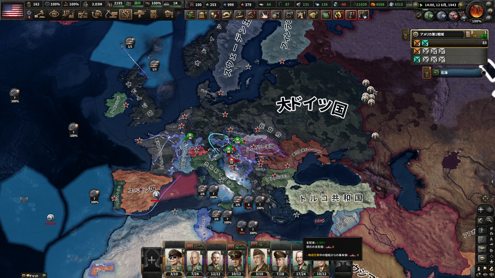
1943年6月、連合国はヨーロッパの全戦線で大規模な反攻に乗り出した。連合国へ転じたイタリア軍は、自国の領域からフランスへなだれ込んでこれを解放し、さらに北上してアントワープを解放する。連合国軍はドイツの最北部を貫いてドイツ軍を南北に分断し、アルプス山中ではドイツ軍の一群を包囲した。ユーゴスラビアでは全土で蜂起が起こり、ドイツの後方を脅かす。フランス方面では、アイゼンハワーの指揮するアメリカ軍と、西尾寿造の指揮する日本軍が協同して、包囲したドイツ軍を殲滅した[2]。
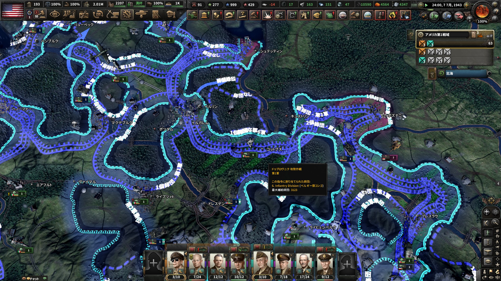
四方からの圧力にさらされたドイツでは、1943年7月、指導者が国外へ逃亡して中央の指揮系統が崩壊した[3]。統制を失ったドイツ本国では各地で組織的な抵抗が瓦解し、アメリカ軍とイタリア軍が進撃を続ける。東部戦線でも同じ時期に赤軍がゴーリキー前面のドイツ軍を壊滅させており、ドイツは東西から同時に押し込まれた。
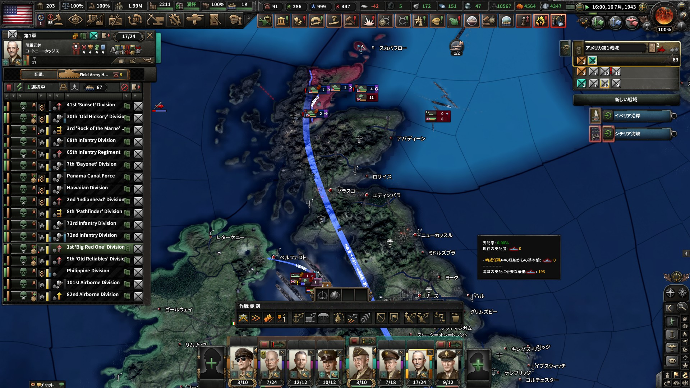
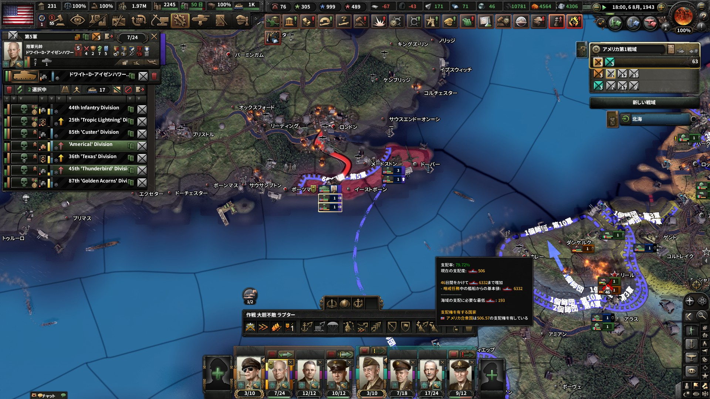
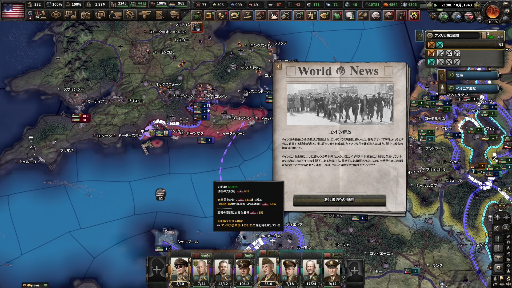
大陸での反攻が先行する一方、海峡を隔てた本土の奪回には渡海戦力の準備を要した。7月、アメリカ軍はスカパフローに上陸してイギリスの解放に着手する。8月にはドーバーを越えてロンドンを解放し、占領下にあったイギリス本土を枢軸国の手から取り戻した。
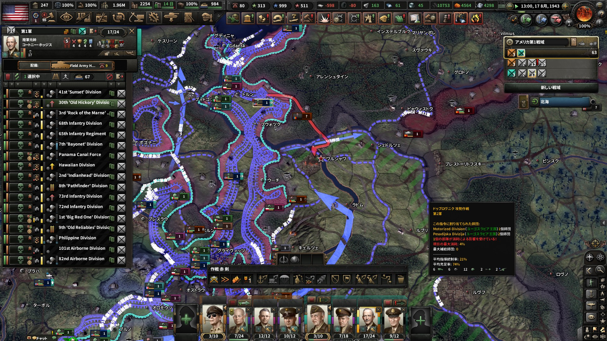
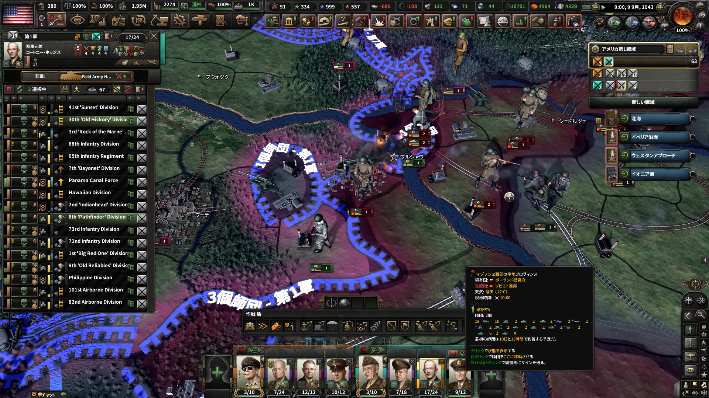
同じ8月、東部では赤軍がモスクワからワルシャワへ向かい、その争奪をめぐって連合国とソビエト連邦が競う展開となった。最終的に1943年9月、赤軍に先んじてイタリア軍がワルシャワを占領した。
指揮系統を失ったドイツは本国をアメリカ軍とイタリア軍に占領され、降伏した。ドイツの降伏をもって枢軸国の組織的抵抗は終わり、続いてハンガリーも降伏して、枢軸国は全面降伏に至る。1943年9月、戦争は連合国およびコミンテルンの勝利に終わった。
本大戦は、枢軸国の同盟関係の脆さを際立たせた戦争でもあった。イタリアは、ドーバー上陸やイギリス本土の制圧でドイツの勝利を支えた、枢軸陣営の最重要の一角であった。それが1943年に連合国へ離反すると、イタリア軍はかつての盟邦であるドイツ軍へ攻撃を加え、最終的にはドイツ本土の大部分をみずから占領するに至る。最も頼みとした同盟国が最大の敵へと転じたことは、ドイツにとって戦局の決定的な転換点となり、両国の関係は完全に破綻した。
この戦争では、ヨーロッパにおける枢軸国の打倒を、降伏から再起した日本を含む連合国軍が主導した。一方、ソビエト連邦は首都モスクワの一時的な喪失を含む苦しい防戦を強いられ、反攻に転じたのは戦争の最終盤であった。その間に西側の連合国はワルシャワを確保し、ハンガリーを降伏させて東欧の一部へ進出しており、これによってこの地域におけるソビエト連邦の影響力は抑えられた。のちの勢力圏争いの萌芽が、この時点で生じていたとする見方もある[4]。